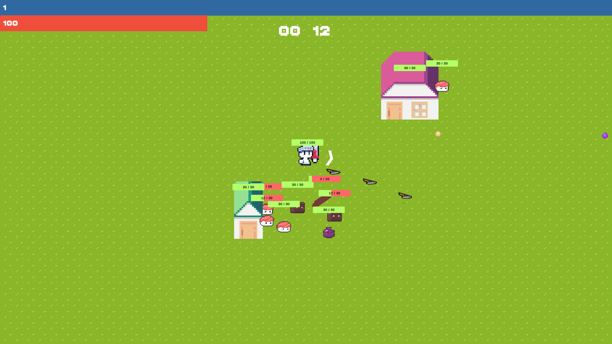

Project ZipZap
Project ZipZap

Laze
 Defend
Project ZipZap
Defend
Defend
Project ZipZap
Defend
Hi!
I'm Calvin, a graduate Gameplay Programmer with experience developing games in multiple game engines. I graduated from the University of the West of England in 2024 with a BSc (Hons) Games Technology degree, with an Upper Second-Class Honours. During my time in university, I've completed multiple solo and group projects using C#, C++, Python, Unity, and Unreal Engine.
I have done several personal projects in said languages and engines. I have also done several projects outside of Game Development using languages such as JavaScript. With JavaScript, I've made projects like a helping tool for a budget tracker in Google Sheets using Google's AppScript. I've also used it to make websites such as this website interactive, adding filters and a page selector.
With all the projects I have done, I've learned how to plan, manage and develop projects. I've learned to work in an agile environment, doing group scrums, and to develop using a version control system. I've also learned to do, take and manage playtests.
From a young age, I've been interested in video games. However, what truly excites me is the process of designing and developing the mechanics of a game. Some of my favourite games are Minecraft, Genshin Impact, Subnautica, Stardew Valley, Counter-Strike, and Timberborn. My goal is to contribute to the development of innovative and immersive games, particularly in the open-world RPG genre.
I'm looking forward to continue my career in the games industry as a Gameplay Programmer.

Some of the courses in the degree was:
- Commercial Games Development
- Advanced Technologies
- Games in C++
- Game Level Design
- Gameplay Programming
Some of the modules in the degree was:
- Advanced Mathematics
- ICT